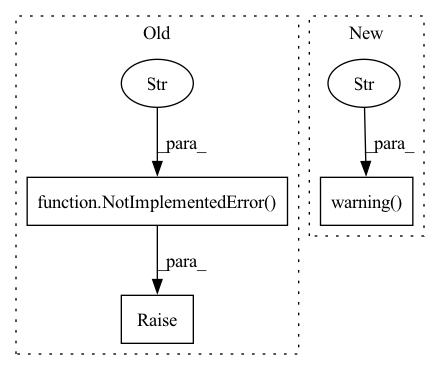

Pattern ID :8095
Before Change
has_pretrained_rat_model = os.path.isfile(f"{pretrained_model_name_or_path}/pytorch_model.bin")
if has_pretrained_rat_model:
if model_cls.__name__.startswith("AutoModel"):
raise NotImplementedError(
"`model_cls` cannot be an AutoModel class when loading a pretrained RATransformer. "
"Please use a specific `model_cls` class. "
"For example, for T5 with AutoModelForSeq2SeqLM, use `model_cls=T5ForConditionalGeneration`"
)
def model_cls_load_pretrained_model_prefix_function(function):
@functools.wraps(function)
def run(model, *args, **kwargs):
// change attention layers with relational ones, if not done beforeAfter Change
)
else:
logger.warning(
"`pretrained_model_name_or_path=None` which means that your RATransformer model won"t be initialized, "
"only its tokenizer."
)
def model_prefix_function(function):
@functools.wraps(function)
def run(*args, **kwargs):In pattern: SUPERPATTERN
Frequency: 4
Non-data size: 3
Instances Fragment ID: 28660048
Project Name: joaolages/ratransformers
Commit Name: 36bd3147f14e9d87a89d1917f4313d3eb9954e39
Time: 2022-12-13
Author: joaop.glages@gmail.com
File Name: src/ratransformers/__init__.py
M Class Name: RATransformer
N Class Name: RATransformer
M Method Name: __init__(6)
N Method Name: __init__(6)
M Parent Class:
N Parent Class:
M File Name: src/ratransformers/__init__.py
N File Name: src/ratransformers/__init__.py
M Start Line: 56
M End Line: 138
N Start Line: 120
N End Line: 218
Before Change
output_mask.dim_groups_map[dim] = groups
// other groups propagated further
else:
raise NotImplementedError("symbolic mask propagation for split by prune dimension is not implemented" )
node.data["output_mask"] = output_mask
After Change
for group in groups:
group.invalidate()
else:
nncf_logger.warning("symbolic mask propagation for split by prune dimension is not implemented, "
"just propagate further for now" )
node.data["output_mask"] = output_mask
Fragment ID: 28660045
Project Name: openvinotoolkit/nncf
Commit Name: c95f5a349ee5424344e35d3951aa1bb4625c1ede
Time: 2023-04-14
Author: nikolay.lyalyushkin@intel.com
File Name: nncf/experimental/common/pruning/operations.py
M Class Name: SplitPruningOp
N Class Name: SplitPruningOp
M Method Name: mask_propagation(4)
N Method Name: mask_propagation(4)
M Parent Class: BasePruningOp
N Parent Class: BasePruningOp
M File Name: nncf/experimental/common/pruning/operations.py
N File Name: nncf/experimental/common/pruning/operations.py
M Start Line: 324
M End Line: 336
N Start Line: 342
N End Line: 363
Before Change
@overrides
def _json_to_instance(self, json_dict: JsonDict) -> Instance:
raise NotImplementedError(
"This predictor maps a question to multiple instances. "
"Please use _json_to_instances instead."
)
def _json_to_instances(self, json_dict: JsonDict) -> List[Instance]:
// We allow the passage / context to be specified with either key.
// But we do it this way so that a "KeyError: context" exception will be raisedAfter Change
@overrides
def _json_to_instance(self, json_dict: JsonDict) -> Instance:
logger.warning(
"This method is implemented only for use in interpret modules."
"The predictor maps a question to multiple instances. "
"Please use _json_to_instances instead for all non-interpret uses. "
)
return self._json_to_instances(json_dict, qid=-1)[0]
def _json_to_instances(self, json_dict: JsonDict, qid: Optional[int] = None) -> List[Instance]:
// We allow the passage / context to be specified with either key. Fragment ID: 28660047
Project Name: allenai/allennlp-models
Commit Name: f4fb932a0ac3a0181fdf0de99acf81b0389825a0
Time: 2021-04-13
Author: akshita23bhagia@gmail.com
File Name: allennlp_models/rc/predictors/transformer_qa.py
M Class Name: TransformerQAPredictor
N Class Name: TransformerQAPredictor
M Method Name: _json_to_instance(2)
N Method Name: _json_to_instance(2)
M Parent Class: Predictor
N Parent Class: Predictor
M File Name: allennlp_models/rc/predictors/transformer_qa.py
N File Name: allennlp_models/rc/predictors/transformer_qa.py
M Start Line: 52
M End Line: 55
N Start Line: 80
N End Line: 85
Before Change
self.n_embd = self.config.n_embd
self.n_head = self.config.n_head
else:
raise NotImplementedError("This template currently only support GPT2, please consider using PrefixTuningTemplatePro." )
self.mid_dim = mid_dim
self.match_n_layer = self.n_layer
self.match_n_head = self.n_headAfter Change
self.using_decoder_past_key_values = using_decoder_past_key_values
assert (self.using_encoder_past_key_values or self.using_decoder_past_key_values), "Can"t be both False."
if not self.config.is_encoder_decoder and not self.using_decoder_past_key_values:
logger.warning("Ignore using_decoder_past_key_values=False in a decoder-only LM." )
if isinstance(self.config, T5Config):
self.n_layer = self.config.num_layers
self.n_embd = self.config.d_model Fragment ID: 28660046
Project Name: thunlp/openprompt
Commit Name: a617ed1e9d0d0246a0f663e8f96e09434d0055c1
Time: 2021-11-06
Author: shengdinghu@gmail.com
File Name: openprompt/prompts/prefix_tuning_template.py
M Class Name: PrefixTuningTemplate
N Class Name: PrefixTuningTemplate
M Method Name: __init__(12)
N Method Name: __init__(10)
M Parent Class: Template
N Parent Class: Template
M File Name: openprompt/prompts/prefix_tuning_template.py
N File Name: openprompt/prompts/prefix_tuning_template.py
M Start Line: 61
M End Line: 69
N Start Line: 49
N End Line: 93